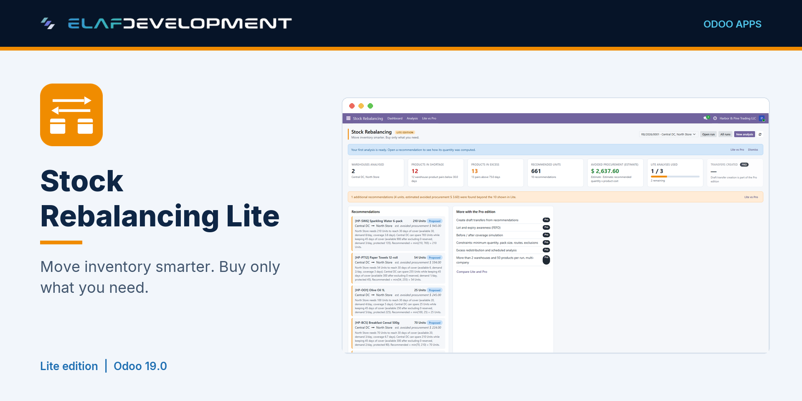
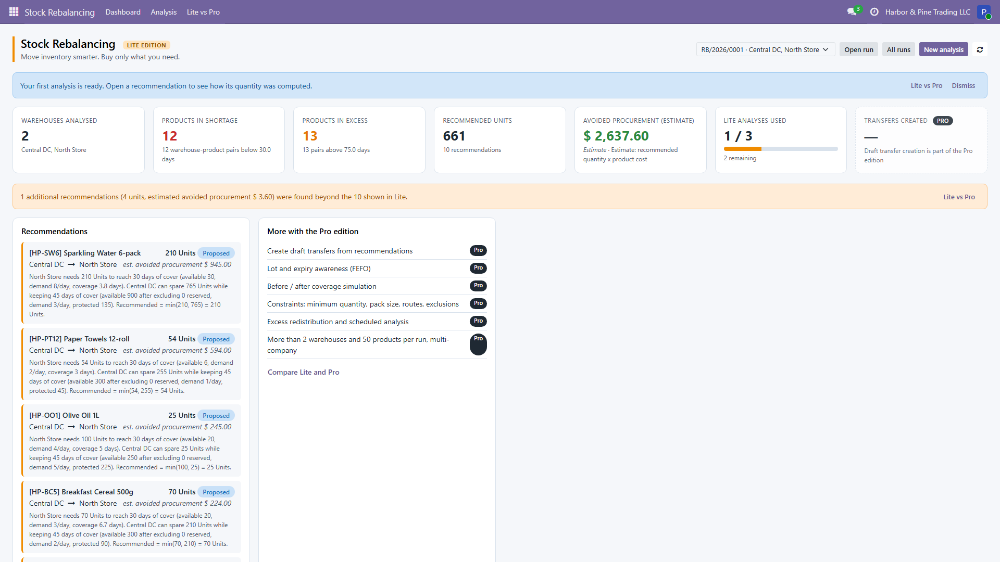
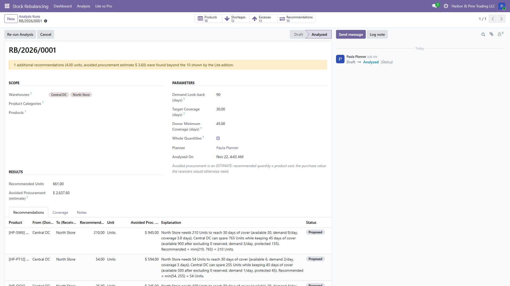
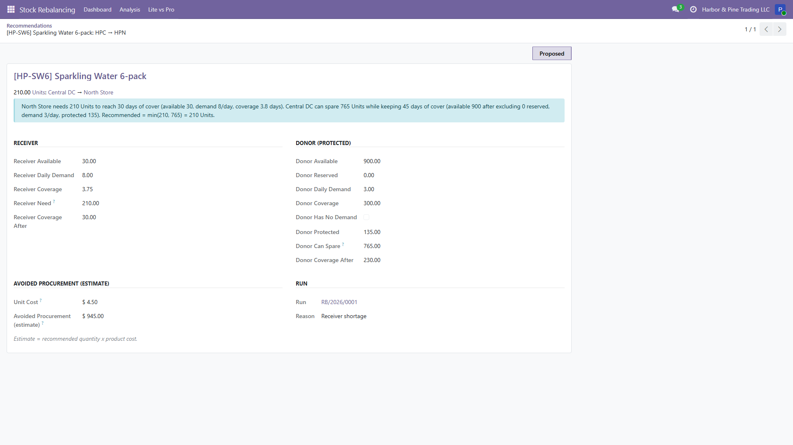
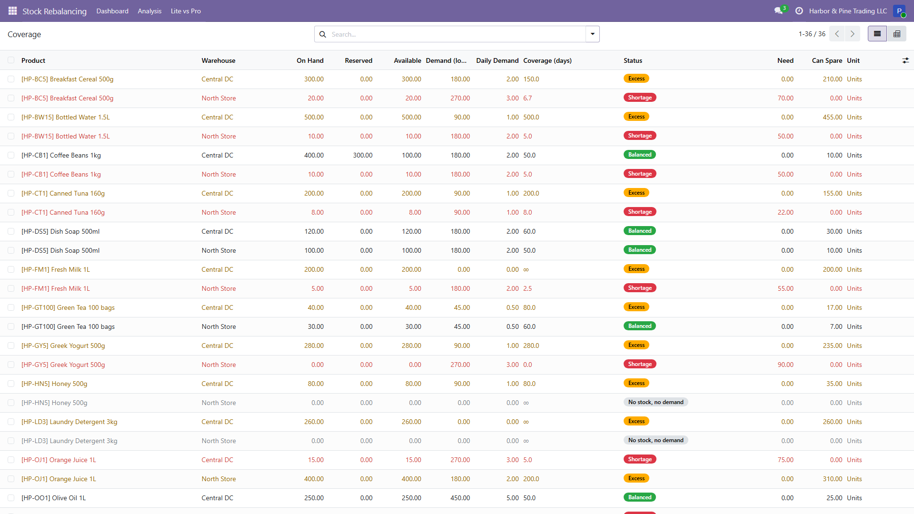
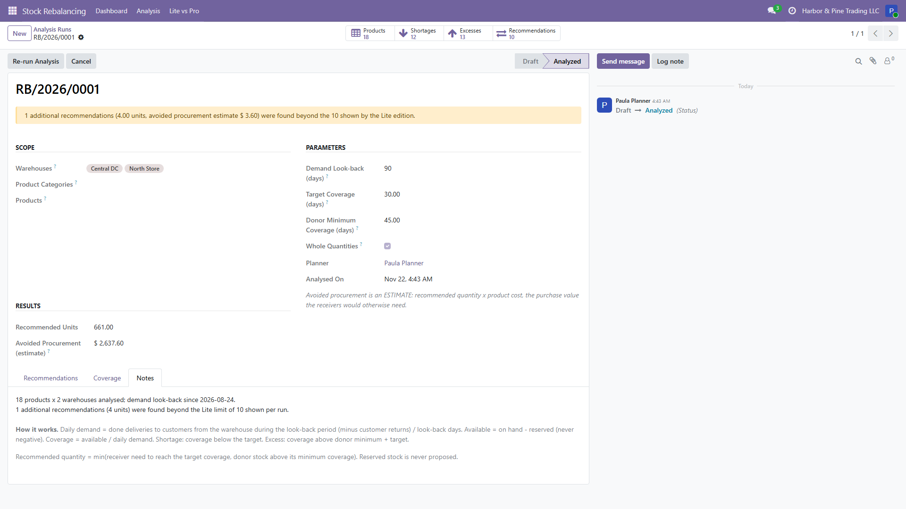
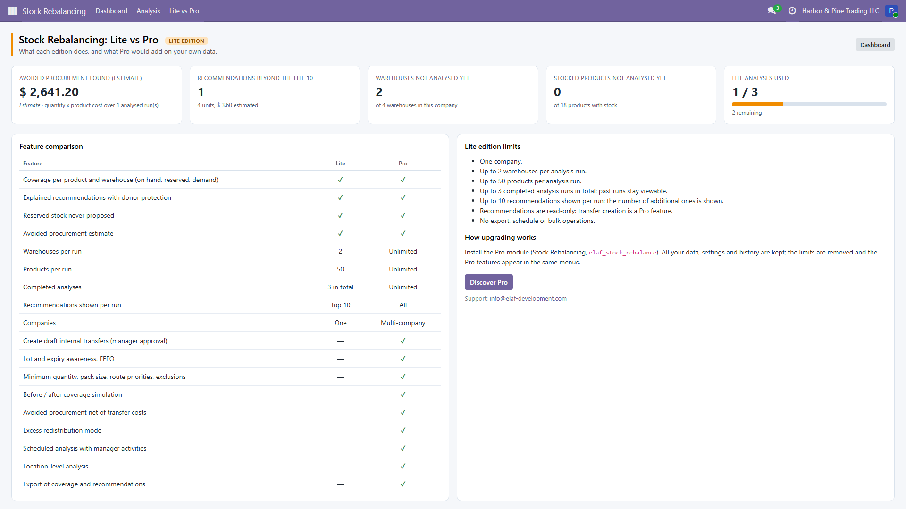

Analysis run with warehouses, look-back, target coverage and donor minimum coverage

LITE EDITION
Find stock imbalances between two warehouses and get explained transfer recommendations that protect the donor's minimum coverage and never move reserved stock, with an avoided-procurement estimate.
Explained quantities Donor protection Reserved stock never moved English and Arabic1
Coverage days per product and warehouse, from on-hand, reserved and real customer demand.
2
Each recommendation explains the receiver's need, what the donor can spare, and why the quantity is what it is.
3
An avoided-procurement estimate shows the value of stock you can move instead of buying. It is labelled an estimate.

Dashboard: warehouses analysed, shortages, excesses, recommended units and the coverage heat table
Choose warehouses, product categories or products, a demand look-back (default 90 days), a target coverage (default 30 days) and a donor minimum coverage (default 45 days).
On hand, reserved and available stock (on hand minus reserved) over all internal locations of each warehouse; daily demand from done customer deliveries minus returns; coverage days and status shortage, balanced or excess.
Quantity = the smaller of the receiver's need to reach the target and the donor's stock above its minimum coverage, rounded to whole units and the product unit of measure.
Every line explains the calculation. The donor never drops below its minimum coverage and reserved stock is never counted as available.
Recommended quantity times product cost, per line, per run and on the dashboard. Always labelled an estimate.
Warehouses analysed, products in shortage and excess, recommended units and the estimate, each opening its records, plus a product by warehouse coverage table.
Lite shows the top 10 recommendations by value and tells you how many more were found, with their units and estimated value.
This free edition is fully functional within the limits below. Please review them before installing.
Analysis run with warehouses, look-back, target coverage and donor minimum coverage

Recommendations with quantities and avoided-procurement estimate

Explanation of a recommended quantity with donor protection

Coverage per product and warehouse: on hand, reserved, available, demand and status

Top 10 recommendations and the number of additional ones found

Lite vs Pro page with the Lite analysis counter
Check whether the second warehouse can supply the first before ordering from vendors.
Move slow stock from a store with weak demand to one that sells it.
| Capability | Lite (free) | Pro |
|---|---|---|
| Coverage analysis and explained recommendations | ✓ | ✓ |
| Avoided-procurement estimate | ✓ | Net of route transfer costs |
| Lot and expiry awareness (FEFO) | — | ✓ |
| Constraints (minimum quantity | — | ✓ |
| Before and after simulation per warehouse | — | ✓ |
| Excess redistribution mode | — | ✓ |
| Scheduled analysis | — | ✓ |
| Location-level breakdown | — | ✓ |
| Companies | One company per database (the first company that completes an analysis) | Multi-company |
| Warehouses per run | Up to 2 warehouses per analysis run | No cap |
| Products per run | Up to 50 products (with stock or demand) per analysis run | No cap |
| Analysis runs | Up to 3 completed analysis runs in total (a failed analysis does not count; re-running an analysed run is free when its parameters and the stock data are unchanged, otherwise it counts as a new analysis). Past runs and recommendations stay viewable. | No cap |
| Recommendations shown | Top 10 recommendations per run (the number of additional ones found is shown) | All recommendations |
| Transfers | Recommendations are read-only; no transfer creation | Draft internal transfers from approved recommendations |
| Export | No export of coverage and recommendation lists | Standard Odoo export |
A Pro edition is available. It is installed on top of Lite and keeps all Lite data, settings and history.
| Supported Odoo versions | 19.0 |
|---|---|
| Other Odoo versions | Odoo 17.0 and 18.0 are distributed as separate packages. |
| Community / Enterprise | Odoo 19.0 Community Edition (tested). Enterprise Edition has not been tested. |
| Hosting | On-premise and Odoo.sh. Not available on Odoo Online, which does not run third-party Python modules. |
| Dependencies | Inventory, Discuss |
| License | LGPL-3 |
No. Lite recommendations are read-only. Draft transfer creation is part of the Pro edition.
From done stock moves from the warehouse to customers within the look-back period, minus customer returns, divided by the number of days.
It is an estimate: recommended quantity times product cost, ignoring transfer costs in Lite.
The user and administrator guide is available in the Documentation tab of this listing.
Community support, best effort. Contact: info@elaf-development.com
Stock Rebalancing Lite 19.0.1.0.0, released 2026-11-22
Initial release for Odoo 19.0.